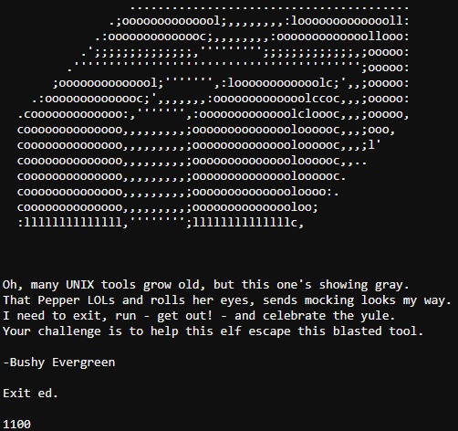

Escape Ed¶
Challenge¶
The initial dialog with Bushy Evergreen:
Bushy Evergreen Hi, I'm Bushy Evergreen. Welcome to Elf U! I'm glad you're here. I'm the target of a terrible trick. Pepper Minstix is at it again, sticking me in a text editor. Pepper is forcing me to learn ed. Even the hint is ugly. Why can't I just use Gedit? Please help me just quit the grinchy thing.
The hint from our badge:
ed Editor Basics From: Bushy Evergreen Ed Is The Standard Text Editor
The banner page from the terminal challenge:
Solution¶
To exit the Ed editor, press q then ENTER
Success!. The following output was displayed:
Loading, please wait......
You did it! Congratulations!
Hints¶
Bushy Evergreen provides the following hint in his dialog after solving the terminal challenge:
Bushy Evergreen Wow, that was much easier than I'd thought. Maybe I don't need a clunky GUI after all! Have you taken a look at the password spray attack artifacts? I'll bet that DeepBlueCLI tool is helpful. You can check it out on GitHub. It was written by that Eric Conrad. He lives in Maine - not too far from here!
The following hints were unlocked in our badge:
Deep Blue CLI Posting From: Bushy Evergreen Eric Conrad on DeepBlueCLI
Deep Blue CLI on Github From: Bushy Evergreen Github page for DeepBlueCLI